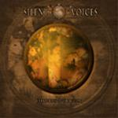

| Artist: | Silent Voices |
| Title: | Chapters Of Tragedy |
| Label: | Low Frequency Records LFR 314018 |
| Length(s): | 46 minutes |
| Year(s) of release: | 2002 |
| Month of review: | [02/2003] |
| 1) | Beyond Shadows | 4.43 |
| 2) | HumanCradleGrave | 5.16 |
| 3) | Tragedy | 10.56 |
| 4) | Cross My Path | 4.38 |
| 5) | Falling From Grace | 4.35 |
| 6) | Glassheart | 6.08 |
| 7) | The Last Sunset | 9.51 |